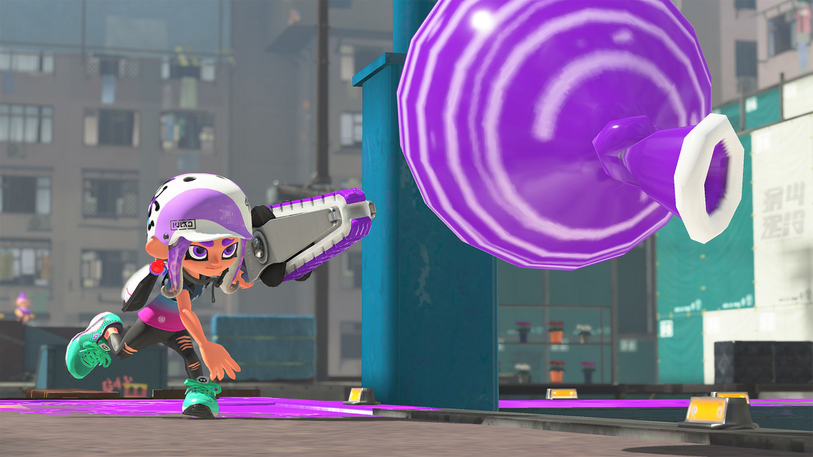

#6: Dapple Dualies Nouveau
Being the alternate kit of the Dapple Dualies, its goal is exactly the same: close and swift combat. with torpedos to aid in splatting and the Reefslider to break even ground, this kit is a force to be reckoned with. Be careful if you come across one, as its quick dodge rolls will easily disorient you.

#5: Splatana Stamper
These slashers are known for their long-ranged swings and close-ranged charged attacks. The Stamper is slower than its smaller class, the wiper, but their swings are much wider and stronger. Paired with burst bombs, splatting enemies should be a breeze. And with the Zipcaster special, you can zip around to take out long-ranged fighers with ease.